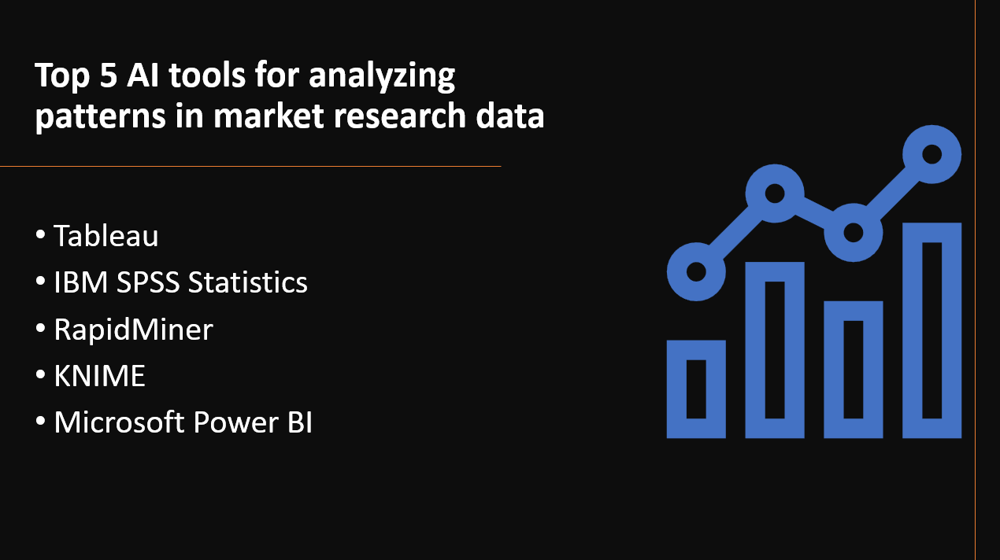

Introduction
Analyzing patterns in market research data is crucial for businesses to gain insights into consumer behavior, identify market trends, and make data-driven decisions. AI tools equipped with advanced algorithms and data analysis capabilities are invaluable in extracting meaningful patterns from large and complex market research datasets. In this blog post, we will explore the top five AI tools for analyzing patterns in market research data, empowering market researchers and analysts to uncover valuable insights and drive business growth.
- AI tools can process and analyze large volumes of market research data much faster than manual methods, saving time and resources.
- AI algorithms can identify complex patterns and relationships in the data, providing more accurate insights compared to traditional statistical methods.
- AI analysis enables data-driven decision-making, helping businesses identify market trends, customer preferences, and potential opportunities.
- AI tools can perform predictive analytics, forecasting future market trends and behavior based on historical data patterns.
- AI systems can continuously learn from new data, improving the accuracy and relevance of pattern analysis over time.
Here's Our Top 5 AI Tools for Analyzing Patterns in Market Research Data:
1: Tableau
Overview and Importance
Tableau is a powerful data visualization and business intelligence tool widely used for analyzing patterns in market research data. It allows users to create interactive and visually appealing dashboards, charts, and reports, enabling businesses to gain deeper insights into their market trends, customer behavior, and competitive landscape. Tableau's user-friendly interface and robust capabilities make it a preferred choice for professionals seeking to make data-driven decisions and identify actionable patterns in market research.
Learn more about Tableau
Key Features and Capabilities
Interactive Data Visualization
- Tableau enables users to create dynamic and interactive visualizations, allowing them to explore and analyze market research data intuitively.
Data Blending and Integration
- Tableau seamlessly integrates with various data sources, allowing users to combine and analyze data from multiple channels to get a comprehensive view of the market landscape.
Real-Time Analytics
- Tableau offers real-time data analysis, enabling businesses to stay updated with the latest market trends and make informed decisions promptly.
2: IBM SPSS Statistics
Overview and Importance
IBM SPSS Statistics is a leading statistical software used for analyzing patterns in market research data. It provides a comprehensive suite of tools and techniques for data analysis, hypothesis testing, and predictive modeling. SPSS Statistics is widely adopted by researchers, analysts, and businesses to uncover insights, identify trends, and make data-driven decisions in the dynamic market landscape.
Learn more about IBM SPSS Statistics
Key Features and Capabilities
Advanced Analytics
- SPSS Statistics offers a wide range of statistical techniques, including regression analysis, clustering, factor analysis, and time series forecasting, empowering users to perform in-depth market research data analysis.
Data Visualization
- The software allows users to create informative charts, graphs, and plots to visually represent market trends and patterns effectively.
Automation and Collaboration
- SPSS Statistics streamlines the analytical process with automation and collaboration capabilities, enabling teams to work together efficiently and produce accurate market insights.
3: RapidMiner
Overview and Importance
RapidMiner is a powerful AI tool used for analyzing patterns in market research data. It provides an integrated environment for data preparation, machine learning, and advanced analytics, making it a preferred choice for researchers and analysts in the market research domain. RapidMiner's user-friendly interface and extensive library of pre-built models accelerate the process of data analysis and pattern discovery.
Learn more about RapidMiner
Key Features and Capabilities
Data Preprocessing
- RapidMiner offers comprehensive data preprocessing capabilities, allowing users to clean, transform, and prepare market research data for analysis.
Machine Learning
- The platform supports a wide range of machine learning algorithms and models for predictive analytics and pattern recognition.
Automated Modeling
- RapidMiner includes automated modeling features, enabling users to quickly build and evaluate predictive models without extensive manual intervention.
4: KNIME
Overview and Importance
KNIME is a versatile AI tool used for analyzing patterns in market research data. It provides an open-source platform that allows researchers and analysts to integrate, manipulate, and analyze data from various sources, making it a valuable asset in market research projects. KNIME's emphasis on modularity and extensibility has led to its popularity in the data science community.
Learn more about KNIME
Key Features and Capabilities
Workflow Automation
KNIME enables users to create workflows that automate data preparation, analysis, and visualization, streamlining the market research process.
Rich Library of Nodes
- The platform offers a wide array of pre-built nodes that facilitate tasks such as data cleansing, transformation, statistical analysis, and machine learning.
Collaboration and Sharing
- KNIME allows users to collaborate on projects, share workflows, and exchange knowledge within the KNIME community, fostering a culture of collaboration and innovation.
5: Microsoft Power BI
Overview and Importance
Microsoft Power BI is a powerful business intelligence tool that holds significant value in the context of analyzing patterns in market research data. It allows users to connect to various data sources, transform and visualize data, and gain insights through interactive dashboards and reports. Power BI is widely used by businesses and researchers to make data-driven decisions and identify patterns and trends in market research data.
Learn more about Microsoft Power BI
Key Features and Capabilities
Data Connectivity
- Power BI supports a wide range of data connectors, enabling users to access data from various sources, including databases, cloud services, and spreadsheets.
Interactive Visualization
- The platform offers a rich set of visualization tools and charts that enable users to create interactive and compelling visual representations of data, facilitating the exploration of patterns in market research data.
Advanced Analytics
- Power BI integrates AI-powered features, such as natural language processing (NLP) and predictive analytics, allowing users to gain deeper insights and make data-driven predictions based on market research data.
Conclusion
AI tools are significant for analyzing patterns in market research data, providing valuable insights. The top five tools are Tableau, IBM SPSS Statistics, RapidMiner, KNIME, and Microsoft Power BI. They offer advanced statistical analysis, data visualization, and machine learning capabilities, improving market research efficiency and driving data-informed decision-making. Market researchers and analysts should explore these AI tools to gain a competitive edge in their industries by unlocking hidden patterns and making informed business strategies. AI-powered market research tools empower businesses to stay ahead, make data-driven decisions, and capitalize on market opportunities effectively.